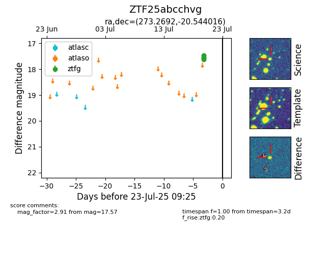

Target ZTF25abcchvg at 2025-07-23 11:52, see:
FINK: fink-portal.org/ZTF25abcchvg
Lasair: lasair-ztf.lsst.ac.uk/objects/ZTF25abcchvg
ALeRCE: alerce.online/object/ZTF25abcchvg
alt names
ZTF25abcchvg (ztf,fink)
coordinates:
equatorial (ra, dec) = (273.2692,-20.54402)
galactic (l, b) = (10.3786,-1.21324)
photometry
last ztfg=17.57
6 ztfg detections
